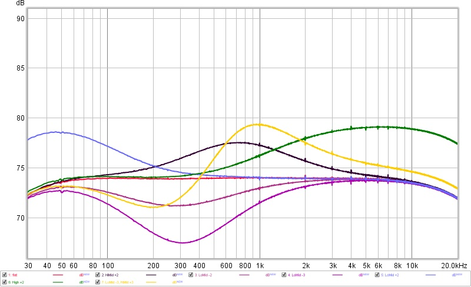

Markbass Nano Mark 300 – frequency response
The Markbass Nano Mark 300 is a compact bass amplifier. It has quite neutral sound reproduction with no apparent character / voicing and that is why I choose this amplifier specifically for double bass. With the EQ knobs in their default position its frequency response is flat. The plot below shows how the response changes when the EQ knobs are moved.
Frequency response

The first curve is the reference; the others show one or two EQ knobs moved away from the default. Note the label for blue curve is wrong in the plot.
| Setting | Colour |
|---|---|
| flat | red |
| Bass +2 | blue |
| High +2 | green |
| HiMid +2 | black |
| LoMid −2 | light purple |
| LoMid −3 | purple |
| LoMid −3, HiMid +3 | yellow |
I find the selection of EQ fixed frequencies suitable for double bass, where you often need to tame 400Hz band and boost the 700 Hz band.